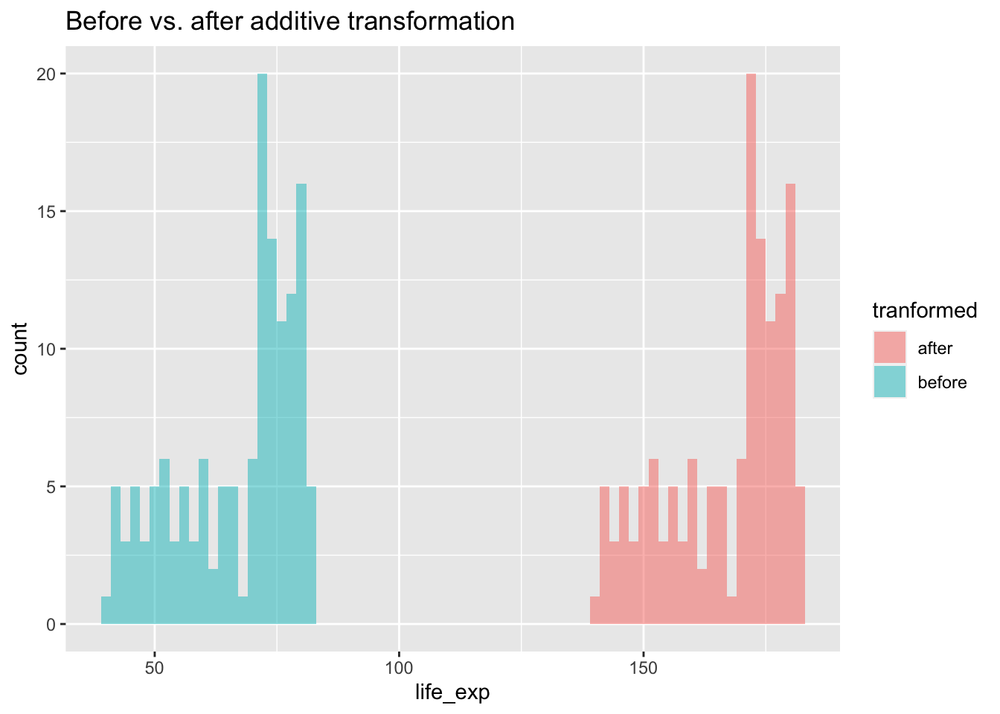

A lot of analyses is dependent on data being normally distributed. One problem with your data might be that it is skewed. Lets focus on the gapminder data from 2007 to see if the gdp and life expectancy data is skewed, and how this could be addressed.
library(gapminder)library(ggplot2)# create a new data frame that only focuses on data from 2007gapminder_2007 <-subset( gapminder, # the data set year ==2007)# Skewness and kurtosis and their standard errors as implement by SPSS## Reference: pp 451-452 of# http://support.spss.com/ProductsExt/SPSS/Documentation/Manuals/16.0/SPSS 16.0 Algorithms.pdf# # See also: Suggestion for Using Powerful and Informative Tests of Normality,# Ralph B. D'Agostino, Albert Belanger, Ralph B. D'Agostino, Jr.,# The American Statistician, Vol. 44, No. 4 (Nov., 1990), pp. 316-321spssSkewKurtosis=function(x) { w=length(x) m1=mean(x) m2=sum((x-m1)^2) m3=sum((x-m1)^3) m4=sum((x-m1)^4) s1=sd(x) skew=w*m3/(w-1)/(w-2)/s1^3 sdskew=sqrt( 6*w*(w-1) / ((w-2)*(w+1)*(w+3)) ) kurtosis=(w*(w+1)*m4 -3*m2^2*(w-1)) / ((w-1)*(w-2)*(w-3)*s1^4) sdkurtosis=sqrt( 4*(w^2-1) * sdskew^2/ ((w-3)*(w+5)) )## z-scores added by reading-psych zskew = skew/sdskew zkurtosis = kurtosis/sdkurtosis mat=matrix(c(skew,kurtosis, sdskew,sdkurtosis, zskew, zkurtosis), 2,dimnames=list(c("skew","kurtosis"), c("estimate","se","zScore")))return(mat)}spssSkewKurtosis(gapminder_2007$gdpPercap)
It’s relatively easy to see the skewness of gdp, but life expectancy is a bit more subtle. As the data is skewed, we may want to transform it to make it less skewed.
We can complete a logarithmic transformation to reduce the skewness, so lets do that to both variables and then replot the data:
So, transforming the gdp did reduce skewness but increased kurtsosis, so beware that applying a transformation may cause other problems! Lets check whether the log transformation reduced skewness for life expectancy:
# original life expectancyspssSkewKurtosis(gapminder_2007$lifeExp)
An important question is whether the associations between your variables change after transformation, so let’s check that next:
# correlation on original datacor.test( gapminder_2007$gdpPercap, gapminder_2007$lifeExp)
Pearson's product-moment correlation
data: gapminder_2007$gdpPercap and gapminder_2007$lifeExp
t = 10.933, df = 140, p-value < 2.2e-16
alternative hypothesis: true correlation is not equal to 0
95 percent confidence interval:
0.5786217 0.7585843
sample estimates:
cor
0.6786624
# correlation on transformed datacor.test( gapminder_2007$gdpPercap_log, gapminder_2007$lifeExp_log)
Pearson's product-moment correlation
data: gapminder_2007$gdpPercap_log and gapminder_2007$lifeExp_log
t = 14.752, df = 140, p-value < 2.2e-16
alternative hypothesis: true correlation is not equal to 0
95 percent confidence interval:
0.7060729 0.8372165
sample estimates:
cor
0.7800706
The log transformed data is more strongly associated with each other than the original data. However, not all transformations will change associations between variables.
Linear vs. non-linear transformations
Linear transformation includes adding, subtracting from, multiplying or dividing variables. These transformations change the absolute value, but not pattern of the distribution of the variable. Let’s use life expectancy to illustrate how linear transformations change the absolute values without changing the distribution.
Additive transformations
If you added 100 to the life expectancy for all countries, you would change the absolute value:
# before transformationmean(gapminder_2007$lifeExp)
[1] 67.00742
# after transformationmean(gapminder_2007$lifeExp +100)
[1] 167.0074
There’s a big difference between the means, but all we’ve done is shift the distribution up 100, we haven’t made it wider or thinner:
# before transformationsd(gapminder_2007$lifeExp)
[1] 12.07302
# after transformationsd(gapminder_2007$lifeExp +100)
[1] 12.07302
If we were to visualise this transformation
life_exp_before_after <-data.frame(life_exp =c(gapminder_2007$lifeExp, gapminder_2007$lifeExp +100),tranformed =c(rep("before", each =142), rep("after", each =142)))ggplot(life_exp_before_after, aes(x=life_exp, fill=tranformed)) +geom_histogram(binwidth =2, alpha=.5, position ="identity") +ggtitle("Before vs. after additive transformation")
We can see above that there is no difference in the shape of the distributions, but a shift. You would get the same pattern shifted also if you had subtracted from the original data. As a result, any association between the transformed variable and another variable will be the same as it was before the transformation as the shapes of the distributions are still the same.
Multiplicative transformations
If you multiplied the life expectancy by 1.5 then you would change both the mean
# before transformationmean(gapminder_2007$lifeExp)
[1] 67.00742
# after transformationmean(gapminder_2007$lifeExp *1.5)
[1] 100.5111
and SD of life expectancy
# before transformationsd(gapminder_2007$lifeExp)
[1] 12.07302
# after transformationsd(gapminder_2007$lifeExp *1.5)
[1] 18.10953
We established above that changing the mean isn’t sufficient to change the shape of a distribution, but would changing the standard deviation change the shape of the distribution. Let’s put two histograms of each distribution side by side to evaluate this:
par(mfrow =c(1,2), mar =c(0,0,2,1))hist(gapminder_2007$lifeExp, breaks =seq(min(gapminder_2007$lifeExp), max(gapminder_2007$lifeExp), length.out =11), main ="Original")hist(gapminder_2007$lifeExp*1.5, breaks =seq(min(gapminder_2007$lifeExp*1.5), max(gapminder_2007$lifeExp*1.5), length.out =11), main ="Original * 1.5")
We can see that the shape/pattern of the distribution is the same, and so the association between the transformed variable and other variables will stay the same after transformation. This is because associations between variables ignore the scale of either variable.
Non-linear transformations
Unlike linear transformations, non-linear transformations change the shape of distributions. There are a wide variety of non-linear transformations you could apply to a variable, such as…
Square (\(^2\))
par(mfrow =c(1,2), mar =c(0,0,2,1))hist(gapminder_2007$gdpPercap, main ="Original")hist(gapminder_2007$gdpPercap^2, main ="Squared")
Squaring data is likely to make the distributions more extreme, and so isn’t often a pragmatic solution to try to make your data less skewed.
Square root (\(\sqrt{}\))
par(mfrow =c(1,2), mar =c(0,0,2,1))hist(gapminder_2007$gdpPercap, main ="Original")hist(sqrt(gapminder_2007$gdpPercap), main ="Square root")
This transformation appears to have reduced the skewness of the distribution. Calculating the square root of a variable will disproportionately reduce extreme values compared to less extreme values. This might be more clearly shown by looking at the change in the individual data points:
# focusing on 5 countries to make it visually easiergapminder_sqrt <-data.frame(country = gapminder_2007$country[1:5],transformed =c(rep("Original",5),rep("Square Root",5) ),# gdp has been divided by 500 to make the comparisons more visiblegdp =c(gapminder_2007$gdpPercap[1:5]/500, sqrt(gapminder_2007$gdpPercap[1:5]/500)))ggplot(gapminder_sqrt, aes(x=country, y = gdp, color = transformed)) +geom_point(size=5) +xlab("Country index") +ylab("GDP (before and after transformation)")
As you can see above, the original values (pink) that are higher are much more heavily reduced by square root transforming them than lower original values.
Logarithmic (\(\log\))
par(mfrow =c(1,2), mar =c(0,0,2,1))hist(gapminder_2007$gdpPercap, main ="Original")hist(log(gapminder_2007$gdpPercap), main ="Logarithmic")
This transformation seems very successful in changing the distribution shape to be less skewed. Let’s see if the log transformation follows a similar pattern as the sqrt in disproportionately impacting larger values than smaller values.
# focusing on 5 countries to make it visually easiergapminder_log <-data.frame(country = gapminder_2007$country[1:5],transformed =c(rep("Original",5),rep("Square Root",5) ),# gdp has been divided by 500 to make the comparisons more visiblegdp =c(gapminder_2007$gdpPercap[1:5]/500, log(gapminder_2007$gdpPercap[1:5]/500)))ggplot(gapminder_log, aes(x=country, y = gdp, color = transformed)) +geom_point(size=5) +xlab("Country index") +ylab("GDP (before and after transformation)")
Yep, log also reduces skewness by disproportionately reducing higher values.
Linear transformations will not change the association between variables
You can transform a single variable by adding and multiplying it, but as these are linear transformations they do not change the shape of the distributions of the original variables, and thus do not change the association between variables. For example:
# correlation with original datacor.test( gapminder_2007$gdpPercap, gapminder_2007$lifeExp)
Pearson's product-moment correlation
data: gapminder_2007$gdpPercap and gapminder_2007$lifeExp
t = 10.933, df = 140, p-value < 2.2e-16
alternative hypothesis: true correlation is not equal to 0
95 percent confidence interval:
0.5786217 0.7585843
sample estimates:
cor
0.6786624
# correlation with original data + 5 to one variable (an additive change)cor.test( gapminder_2007$gdpPercap +5, gapminder_2007$lifeExp)
Pearson's product-moment correlation
data: gapminder_2007$gdpPercap + 5 and gapminder_2007$lifeExp
t = 10.933, df = 140, p-value < 2.2e-16
alternative hypothesis: true correlation is not equal to 0
95 percent confidence interval:
0.5786217 0.7585843
sample estimates:
cor
0.6786624
# correlation with original data - 10 to one variable (an additive change)cor.test( gapminder_2007$gdpPercap, gapminder_2007$lifeExp -10)
Pearson's product-moment correlation
data: gapminder_2007$gdpPercap and gapminder_2007$lifeExp - 10
t = 10.933, df = 140, p-value < 2.2e-16
alternative hypothesis: true correlation is not equal to 0
95 percent confidence interval:
0.5786217 0.7585843
sample estimates:
cor
0.6786624
# correlation with multiplication of 5 to one variable (multiplicative)cor.test( gapminder_2007$gdpPercap *5, gapminder_2007$lifeExp)
Pearson's product-moment correlation
data: gapminder_2007$gdpPercap * 5 and gapminder_2007$lifeExp
t = 10.933, df = 140, p-value < 2.2e-16
alternative hypothesis: true correlation is not equal to 0
95 percent confidence interval:
0.5786217 0.7585843
sample estimates:
cor
0.6786624
# grid comparing the 4 transformationspar(mfrow =c(2,2), mar =c(2,2,2,1))plot(gapminder_2007$gdpPercap, gapminder_2007$lifeExp, main="original correlation")plot(gapminder_2007$gdpPercap +5, gapminder_2007$lifeExp, main="added 5 to gdp")plot(gapminder_2007$gdpPercap -10, gapminder_2007$lifeExp, main ="took 10 away from gdp")plot(gapminder_2007$gdpPercap *5, gapminder_2007$lifeExp, main ="multiplied gdp by 5")
You can see that the transformations being linear haven’t changed the nature of the associations.
Non-linear transformations do change associations
If you apply non-linear transformations to one or both variables this will change the direction and strength of the associations. Below are some examples when you transform both variables:
# correlation with original datacor.test( gapminder_2007$gdpPercap, gapminder_2007$lifeExp)
Pearson's product-moment correlation
data: gapminder_2007$gdpPercap and gapminder_2007$lifeExp
t = 10.933, df = 140, p-value < 2.2e-16
alternative hypothesis: true correlation is not equal to 0
95 percent confidence interval:
0.5786217 0.7585843
sample estimates:
cor
0.6786624
# correlation with log of variables squaredcor.test(log(gapminder_2007$gdpPercap),log(gapminder_2007$lifeExp))
Pearson's product-moment correlation
data: log(gapminder_2007$gdpPercap) and log(gapminder_2007$lifeExp)
t = 14.752, df = 140, p-value < 2.2e-16
alternative hypothesis: true correlation is not equal to 0
95 percent confidence interval:
0.7060729 0.8372165
sample estimates:
cor
0.7800706
# correlation with both variables squaredcor.test( gapminder_2007$gdpPercap ^2, gapminder_2007$lifeExp ^2)
Pearson's product-moment correlation
data: gapminder_2007$gdpPercap^2 and gapminder_2007$lifeExp^2
t = 8.6437, df = 140, p-value = 1.123e-14
alternative hypothesis: true correlation is not equal to 0
95 percent confidence interval:
0.4709220 0.6877841
sample estimates:
cor
0.5898894
Pearson's product-moment correlation
data: sqrt(gapminder_2007$gdpPercap) and sqrt(gapminder_2007$lifeExp)
t = 12.981, df = 140, p-value < 2.2e-16
alternative hypothesis: true correlation is not equal to 0
95 percent confidence interval:
0.6539524 0.8057025
sample estimates:
cor
0.7390648
# grid comparing the 4 transformationspar(mfrow =c(2,2), mar =c(2,2,2,1))plot(gapminder_2007$gdpPercap, gapminder_2007$lifeExp, main ="original correlation")plot(log(gapminder_2007$gdpPercap),log(gapminder_2007$lifeExp), main ="log applied")plot(gapminder_2007$gdpPercap ^2,gapminder_2007$lifeExp ^2, main ="data squared")plot(sqrt(gapminder_2007$gdpPercap),sqrt(gapminder_2007$lifeExp), main ="square root of data")

Transforming is not universally accepted
Whilst this page describes ways to transform the data and how they impact the distributions, this isn’t universally accepted practice as it is changing your data (perhaps similar to arguments that you shouldn’t remove outliers if they reflect real data points). However, transformation does not necessarily bias your data towards or against hypotheses if done appropriately, and is in fact used in mainstream analyses such Spearman’s Rank correlations. There are at least two major possible problems from inappropriately transforming your data:
Treating your data unevenly to create meaningless differences between conditions. For example, if you ran a t-test between 2 conditions, but one of them wasn’t normally distributed, then transforming only one of the conditions could make your comparison less meaningful. Let’s use the gapminder data to illustrate this by comparing gdp per capita between Europe and Africa:
So We can see that there’s a significant problem with skewness for countries from Africa (zScore > 1.96) but not from Europe. The correct thing to do is to apply any transformation (to address skewness) to Africa to Europe also to avoid differences between the groups reflecting bias from the distortions. Logarithmic transformations can help reduce skewness, so let’s see how the means compare after applying the log transformation to both groups:
There’s a difference, in which Europe had a higher GDP per capita in 2007. Let’s check if both Europe and Africa are less skewed in their distributions after log-transforming their data:
It now looks like Europeans have 3346.604 times as much GDP per capita as Africa!?
The above example hopefully is quite intuitive how problems arise if you apply transformations mindlessly. If you will be comparing differences in magnitudes between conditions, then it is important that transformations are applied equally to avoid bias. If you are correlating between conditions (or conducting a regression), then you do not have the same issue of bias.
Question 1
Which types of transformations might make a distribution normal?
viewof transformation_1_response = Inputs.radio(['linear','non-linear']);correct_transformation_1 ='non-linear';transformation_1_result = {if(transformation_1_response == correct_transformation_1){return'Correct!'; } else {return'Incorrect or incomplete. The pattern of a distribution does not change after linear transformations.'; };}
Question 2
Which of the following transformations is least likely to result in a normal distribution?
viewof transformation_2_response = Inputs.radio(['log','square','square-root']);correct_transformation_2 ='square';transformation_2_result = {if(transformation_2_response == correct_transformation_2){return'Correct! Squaring your distribution will exagerate even relative differences between your data points, and thus likely to skew your distribution.'; } else {return'Incorrect or incomplete.'; };}